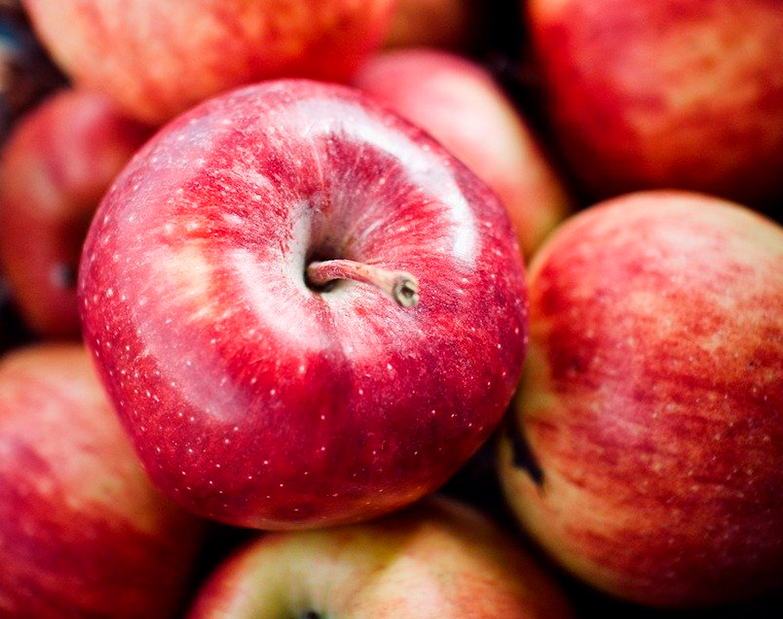
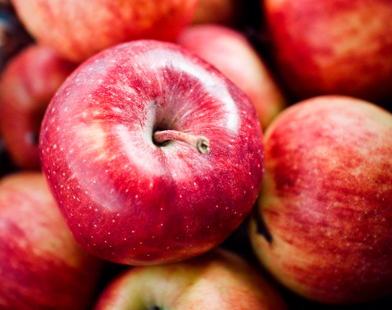

ВИРОЩЕНО ТА ЗАМОРОЖЕНО В УКРАЇНІ
UA
EN
PL

ВИРОЩЕНО ТА ЗАМОРОЖЕНО В УКРАЇНІ
МИ ПОРУЧ
11років
НА РИНКУ
417+га
СІЛЬГОСПЗЕМЕЛЬ
2200м
ЗАВОД ІЗ ЗАМОРОЗКИ
ТА ПЕРЕРОБКИ
Агровиробний комплекс «HIGHBERRY» задовільняє попит українського та європейського споживача свіжими й замороженими продуктами абсолютної якості за рахунок власного вирощування та власного виробництва
Вигідне географічне розташування та близькість до європейського кордону дозволяють скоротити витрати й час при транспортуванні продукції до наших клієнтів в Україні та експорту до країн Європи ДІЗНАЙТЕСЯ БІЛЬШЕ
FRESH
ПОЛУНИЦЯ
Площа 41 га
Очікувана врожайність
Сорт: Хоней, Алегро, Флоренс, Фортуна
Період збору врожаю: червень-липень
ДІЗНАЙТЕСЯ БІЛЬШЕМАЛИНА
Площа 25,3 га
Очікувана врожайність: 200т
Сорт: Полка, Херітейдж, Полана
Період збору врожаю: серпень-жовтень
ДІЗНАЙТЕСЯ БІЛЬШЕОЖИНА
Площа 88,2 га
Очікувана врожайність: 1000т
Сорт: Лутовка, Ерді, Дебрецема-Бортемо
Період збору врожаю: липень
ДІЗНАЙТЕСЯ БІЛЬШЕВИШНЯ
Площа 88,2 га
Очікувана врожайність: 1000т
Сорт: Лутовка, Ерді, Дебрецема-Бортемо
Період збору врожаю: липень
ДІЗНАЙТЕСЯ БІЛЬШЕБРОКОЛІ
Площа 88,2 га
Очікувана врожайність: 1000т
Сорт: Лутовка, Ерді, Дебрецема-Бортемо
Період збору врожаю: липень
ДІЗНАЙТЕСЯ БІЛЬШЕЦВІТНА КАПУСТА
Площа 88,2 га
Очікувана врожайність: 1000т
Сорт: Лутовка, Ерді, Дебрецема-Бортемо
Період збору врожаю: липень
ДІЗНАЙТЕСЯ БІЛЬШЕБРЮСЕЛЬСКА КАПУСТА
Площа 88,2 га
Очікувана врожайність: 1000т
Сорт: Лутовка, Ерді, Дебрецема-Бортемо
Період збору врожаю: липень
ДІЗНАЙТЕСЯ БІЛЬШЕПЕРЕЦЬ
Площа 88,2 га
Очікувана врожайність: 1000т
Сорт: Лутовка, Ерді, Дебрецема-Бортемо
Період збору врожаю: липень
ДІЗНАЙТЕСЯ БІЛЬШЕТОМАТИ
Площа 88,2 га
Очікувана врожайність: 1000т
Сорт: Лутовка, Ерді, Дебрецема-Бортемо
Період збору врожаю: липень
ДІЗНАЙТЕСЯ БІЛЬШЕМОРКВА
Площа 88,2 га
Очікувана врожайність: 1000т
Сорт: Лутовка, Ерді, Дебрецема-Бортемо
Період збору врожаю: липень
ДІЗНАЙТЕСЯ БІЛЬШЕВИРОЩУВАННЯ

417+га
СІЛЬГОСПЗЕМЕЛЬ
1500+тон
ЯГІД

200тон
ОВОЧІВ

МАЛИНА
2 га

КАПУСТА
БРЮССЕЛЬСКА
2 га

ОЖИНА
2 га

ВИШНЯ
2 га
ПОЛУНИЦЯ
2 га
КАПУСТА
КОЛЬОРОВА
2 га
ПЕРЕЦЬ
2 га

ТОМАТИ
2 га

БРОКОЛІ
2 га
МОРКВА
2 га
Агровиробничий комплекс “HIGHBERRY” постійно вдосконалює технологію вирощування культур, отримуючи максимальний об'єм врожаю з одного гектара.
Єдиний агрохімічний аналіз у кожному кілограмі всієї партії гарантує продукція, зібрана на наших полях.
Особливу увагу приділяємо раціональному використанню та контролю за нормами внесення добрив і засобів захисту рослин ДІЗНАЙТЕСЯ БІЛЬШЕ
 

FROZEN
ЯГОДИ, ФРУКТИ
полуниця, малина, ожина, вишня
ДИКОРОСИ
ожина, журавлина, калина, чорниця, брусниця, обліпиха, аронія
ДІЗНАЙТЕСЯ БІЛЬШЕПЮРЕ
ОВОЧІ, ГРИБИ
СУМІШІ
ВИРОБНИЦТВО
Агровиробничий комплекс “HIGHBERRY” має власний завод з переробки та заморожування ягід, фруктів, овочів, різноманітних фруктово-овочевих сумішей та ін. в промислових масштабах.
Замороження відбувається за технологією IQF, завдяки сучасному високотехнологічному оснащенню, що дозволяє виготовляти біля 60 т продукції на добу ДІЗНАЙТЕСЯ БІЛЬШЕ
2500тон на рік
ЗАМОРОЖУЄМО
60тон на добу
ПОТУЖНІСТЬ
ВИРОБНИЦТВА
5країн
ЕКСПОРТ

МИТТЯ ТА СУШКА
Процес переробки ягід, фруктів та овочів завжди починається з миття та сушіння продукції. В залежності від виду овочів та фруктів для мийки ми використовуємо машини м’якого або жорсткого миття.
ДІЗНАЙТЕСЯ БІЛЬШЕБЛАНШУВАННЯ
Процес переробки ягід, фруктів та овочів завжди починається з миття та сушіння продукції. В залежності від виду овочів та фруктів для мийки ми використовуємо машини м’якого або жорсткого миття.
ДІЗНАЙТЕСЯ БІЛЬШЕОЧИЩЕННЯ
Процес переробки ягід, фруктів та овочів завжди починається з миття та сушіння продукції. В залежності від виду овочів та фруктів для мийки ми використовуємо машини м’якого або жорсткого миття.
ДІЗНАЙТЕСЯ БІЛЬШЕВИДАЛЕННЯ КІСТОЧКИ АБО СЕРЕВИНИ
Процес переробки ягід, фруктів та овочів завжди починається з миття та сушіння продукції. В залежності від виду овочів та фруктів для мийки ми використовуємо машини м’якого або жорсткого миття.
ДІЗНАЙТЕСЯ БІЛЬШЕНАРІЗКА
Процес переробки ягід, фруктів та овочів завжди починається з миття та сушіння продукції. В залежності від виду овочів та фруктів для мийки ми використовуємо машини м’якого або жорсткого миття.
ДІЗНАЙТЕСЯ БІЛЬШЕГЛАЗУРУВАННЯ
Процес переробки ягід, фруктів та овочів завжди починається з миття та сушіння продукції. В залежності від виду овочів та фруктів для мийки ми використовуємо машини м’якого або жорсткого миття.
ДІЗНАЙТЕСЯ БІЛЬШЕШНЕКУВАННЯ
Процес переробки ягід, фруктів та овочів завжди починається з миття та сушіння продукції. В залежності від виду овочів та фруктів для мийки ми використовуємо машини м’якого або жорсткого миття.
ДІЗНАЙТЕСЯ БІЛЬШЕКАЛІБРУВАННЯ
Процес переробки ягід, фруктів та овочів завжди починається з миття та сушіння продукції. В залежності від виду овочів та фруктів для мийки ми використовуємо машини м’якого або жорсткого миття.
ДІЗНАЙТЕСЯ БІЛЬШЕРУЧНА ІНСПЕКЦІЯ
Процес переробки ягід, фруктів та овочів завжди починається з миття та сушіння продукції. В залежності від виду овочів та фруктів для мийки ми використовуємо машини м’якого або жорсткого миття.
ДІЗНАЙТЕСЯ БІЛЬШЕФАСУВАННЯ
Процес переробки ягід, фруктів та овочів завжди починається з миття та сушіння продукції. В залежності від виду овочів та фруктів для мийки ми використовуємо машини м’якого або жорсткого миття.
ДІЗНАЙТЕСЯ БІЛЬШЕ